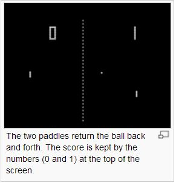

看影片瞭解電玩遊戲的起源與歷史
對於台灣的五年級 (民國 50 年代出生) 的朋友們而言，可能很多人都玩過那種小型的掌上遊戲機， 但是大部分的人可能不瞭解這類電動遊戲的歷史，以下的影片用較通俗的方式介紹了電玩的歷史。
| History of Video Games | 內容簡介 | 連結 |
|---|---|---|
| 前言 | Making of | http://youtu.be/YqJEgA93KEo |
| 第 1 集 | steve russell, computer space, spacewar | http://youtu.be/Egw-EdMVZ4w |
| 第 2 集 | Magnavox Odyssey Ralph Baer | http://youtu.be/BNkDjQPdlu0 |
| 第 2B 集 | Magnavox Odyssey Light Rifle Gun | http://youtu.be/WyXwqJOyDUY |
| 第 3 集 | PONG, Space Race, Gotcha, Gran Trak 10 | http://youtu.be/Or35jROrkmc |
| 第 4 集 | steve russell, computer space, spacewar | http://youtu.be/XgzJWYNtVJY |

圖、第一個進入生活領域的 Pong 電玩遊戲
看到上面的「乒乓球」遊戲，真的讓我想起很小的時候，曾經看過且玩過這樣的遊戲機，而後來的「小蜜蜂」 、「小精靈」等遊戲，還曾經造成很多小學生在電動玩具店流連忘返。
我記得在我小學一年級左右，台灣街頭巷尾都有人在店裏擺上一台電動機台，小孩投兩塊錢好像就可以玩一次， 那時候我很喜歡玩「小精靈、小蜜蜂」之類的遊戲，可惜功力太差，常常不到兩分鐘就掛了。
但是我的大哥後來練到功力很好，結果怎麼打都不會掛，還常常引起一堆人在旁圍觀，一打就是一個小時， 結果 .... ，我的老爸聞風而來，把他給捉回去，然後就禁止他打電動了。
而我、則是因為功力太差，反而逃過一劫 ...
參考文獻
【本文由陳鍾誠取材並修改自 維基百科，採用創作共用的 姓名標示、相同方式分享 授權】